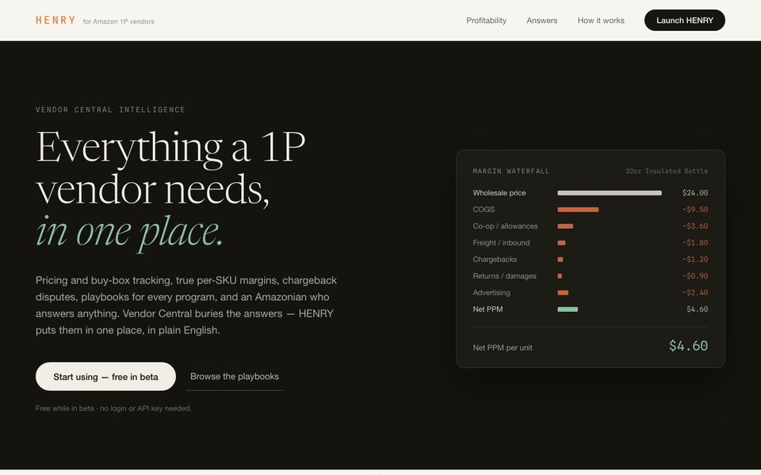

Henry
Amazon 1P vendor operations.
What I imagine the perfect 1P vendor portal would be, shaped by hundreds of hours of conversations with some of the largest US businesses selling on Amazon. It classifies chargebacks by root cause and drafts the dispute.
tool useevalsdeterministic math